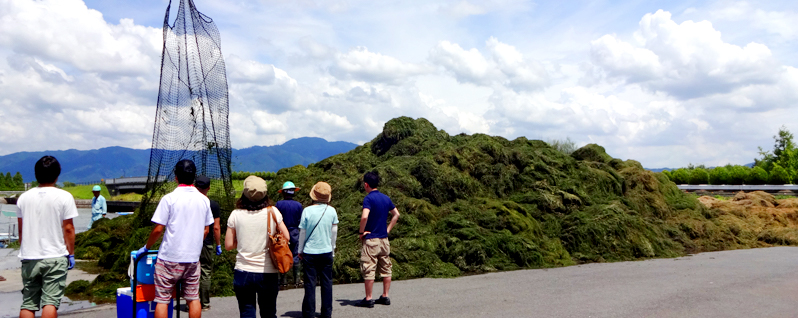

  <div id="wrapper_top">
    <div id="wrapper_bottom">
      <div id="cover">
        <div class="swiper-container">
          <div class="main_text_wrapper">
            <p class="main_text">
              Laboratory of <br>
              Restoration Ecology
            </p>
            <p class="sub_text">Soka University of Engineering</p>
          </div>
          <ul class="swiper-wrapper">
            <li class="swiper-slide swiper-slide2">
              
            </li>
            <li class="swiper-slide swiper-slide3">
              
            </li>
            <li class="swiper-slide swiper-slide4">
              
            </li>
            <li class="swiper-slide swiper-slide5">
              
            </li>
          </ul>
          <div class="swiper-pagination"></div>
        </div>
      </div>
      <div id="body">
        {% include side_nav.html %}
        <div id="right">
          <div id="contents">
            <section class="news-container">
              <h3 id="updates">News</h3>
              <table id="topics"></table>
              <a class="read_more" href="news.html">Read more</a>
            </section>
            <section class="fb-container">
              <h3 id="facebook">Facebook</h3>
              <div class="fb-iframe-container">
                <!-- <div
                  class="fb-page"
                  data-href="https://www.facebook.com/TodaLab/"
                  data-tabs="timeline"
                  data-width="500"
                  data-height="700"
                  data-small-header="true"
                  data-adapt-container-width="true"
                  data-hide-cover="false"
                  data-show-facepile="false"
                > -->
                  <blockquote
                    cite="https://www.facebook.com/TodaLab/"
                    class="fb-xfbml-parse-ignore"
                  >
                    <a href="https://www.facebook.com/TodaLab/"
                      >修復生態学研究室 - LRE</a
                    >
                  </blockquote>
                </div>
              </div>
              <div class="fb-border-bottom"></div>
            </section>
          </div>
        </div>
        <div class="clear"></div>
      </div>
      <div id="pre-footer">
        <div
          class="fb-like"
          data-share="true"
          data-width="450"
          data-show-faces="true"
        ></div>
      </div>
    </div>
    {% include footer.html %}
  </div>
</div>
<script src="./assets/js/swiper.min.js"></script>
<script src="./assets/js/lightbox.min.js"></script>
<script
async
defer
src="https://apis.google.com/js/api.js"
></script>
